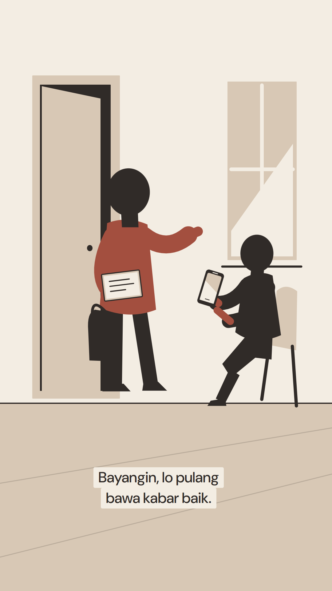
01: Pulang membawa cerita
0–4 detik · 4 detik
Bayangin, lo pulang bawa kabar baik.
Mengenalkan siapa yang datang, ruang yang dibagi, dan antusiasme awal.
Dari cerita yang tertahan, menuju percakapan yang mendapat tempat. Naskah v1 sudah disetujui. Setiap gambar memperlihatkan satu pose utama; ketuk gambar untuk membukanya pada ukuran penuh. Gerak dan audio dibuat setelah storyboard diterima.

0–4 detik · 4 detik
Bayangin, lo pulang bawa kabar baik.
Mengenalkan siapa yang datang, ruang yang dibagi, dan antusiasme awal.
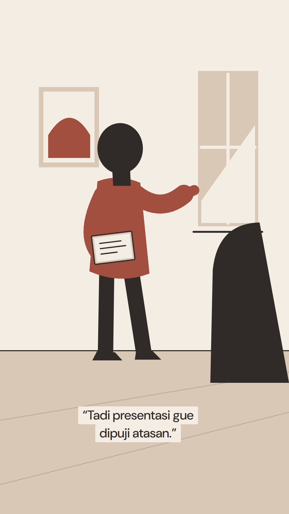
4–8 detik · 4 detik
“Tadi presentasi gue dipuji atasan.”
Memberi isi konkret pada kabar baik: presentasi yang dipuji.
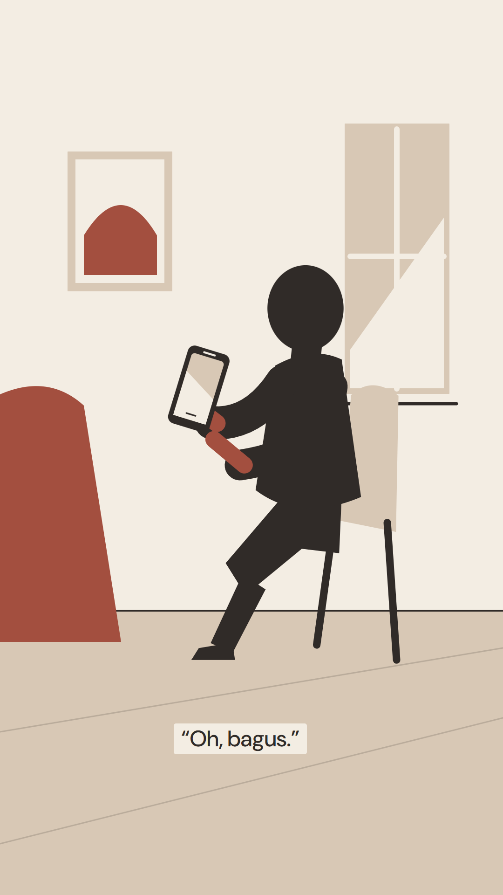
8–12 detik · 4 detik
Dia masih lihat HP. “Oh, bagus.”
Memperlihatkan arah perhatian pada momen jawaban singkat, tanpa menyimpulkan niat.
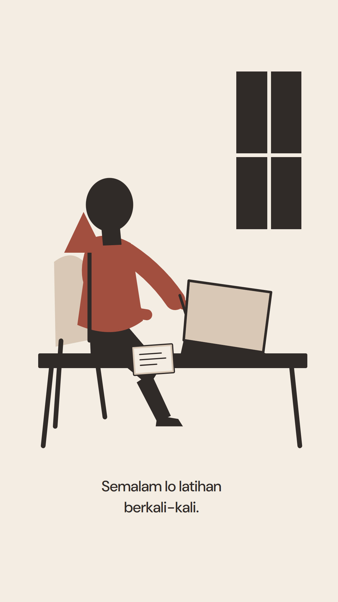
12–21 detik · 9 detik
Padahal lo masih pengen cerita. Semalam lo latihan berkali-kali. Pas maju, tangan lo dingin. Terus semuanya berjalan lancar.
Membuka usaha sebelum pencapaian supaya arti kabar baik dapat diikuti.
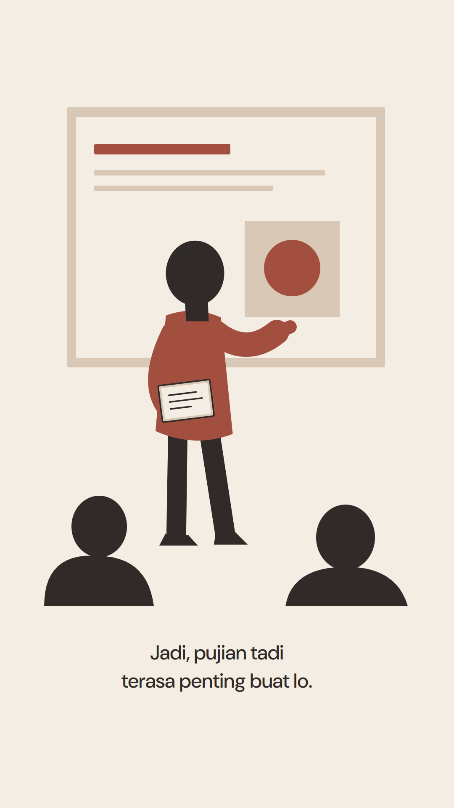
21–28 detik · 7 detik
Lo sempat kepikiran minta orang lain yang maju. Jadi, pujian tadi terasa penting buat lo.
Memperlihatkan keberanian yang tadinya diragukan dalam satu situasi kerja.
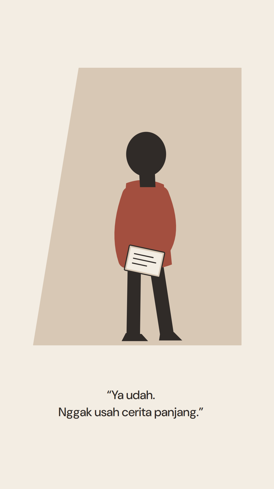
28–33 detik · 5 detik
Tapi sekarang lo mikir, “Ya udah. Nggak usah cerita panjang.”
Menampilkan gestur menarik diri dan catatan yang tidak jadi dibuka.
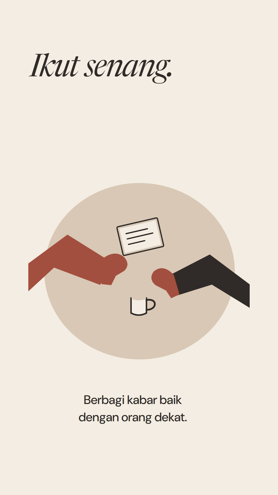
33–39 detik · 6 detik
Dalam riset hubungan, berbagi kabar baik dengan orang dekat dikenal sebagai capitalization.
Mengenalkan berbagi pengalaman positif lewat ruang percakapan bersama (C1).
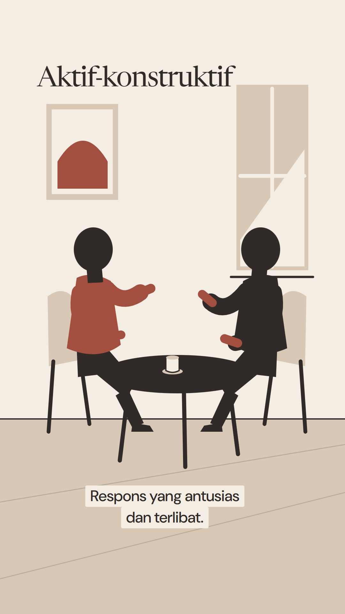
39–48 detik · 9 detik
Respons yang antusias dan terlibat disebut aktif-konstruktif. Dalam penelitian, pola respons ini berkaitan dengan kepuasan dan kedekatan dalam hubungan.
Memberi nama satu pembeda respons dan menyampaikan asosiasi secara terbatas (C2–C3).
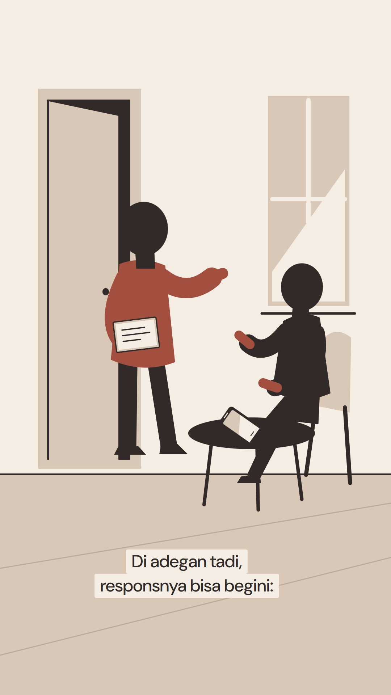
48–51 detik · 3 detik
Di adegan tadi, responsnya bisa begini:
Mengembalikan posisi ruang dan pemeran sebelum mencoba respons lain.
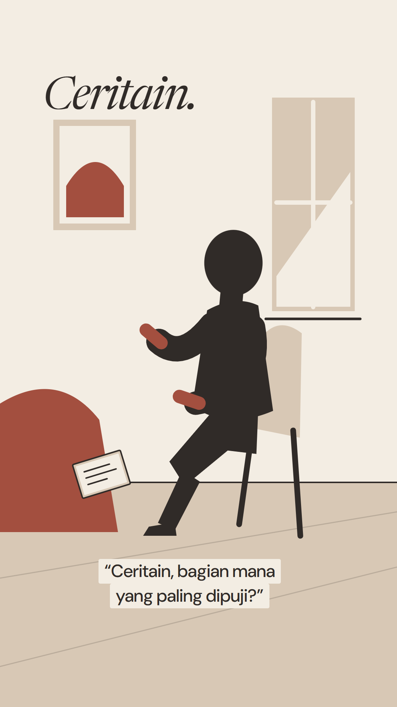
51–58 detik · 7 detik
“Wah, keren! Kemarin lo latihan terus, kan? Ceritain, bagian mana yang paling dipuji?”
Memperlihatkan perhatian dan rasa ingin tahu lewat contoh dialog.
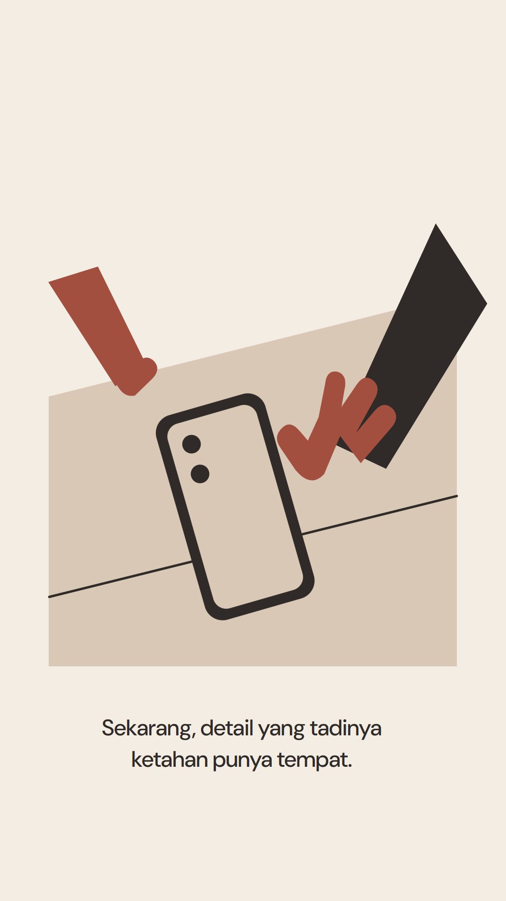
58–65 detik · 7 detik
Dia menaruh HP. Lo lanjut cerita. Sekarang, detail yang tadinya ketahan punya tempat.
Membuat peralihan perhatian terlihat lewat tindakan pada HP.
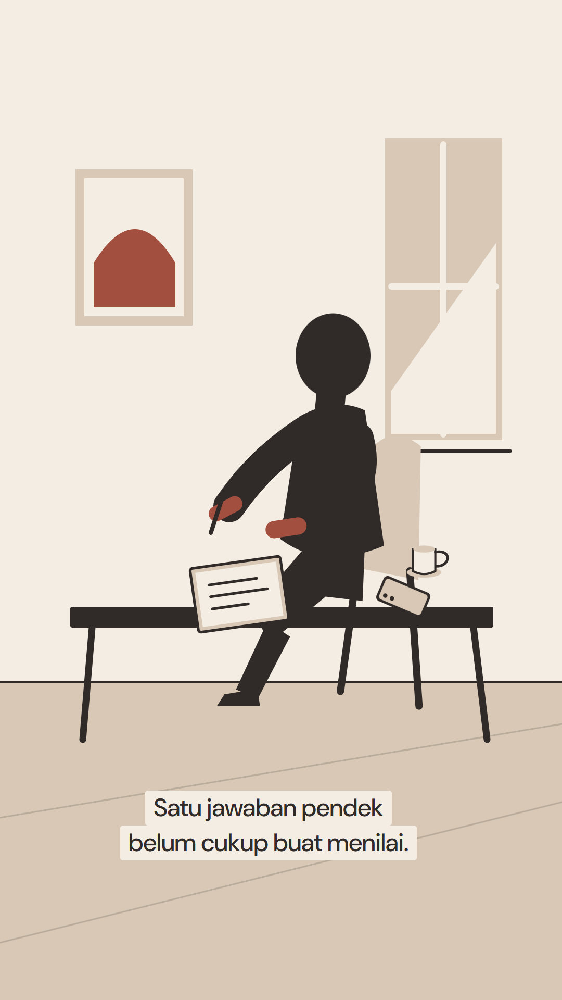
65–72 detik · 7 detik
Satu jawaban pendek belum cukup buat menilai dia nggak peduli. Konteksnya perlu dilihat.
Mengingatkan bahwa satu respons tidak cukup untuk menilai kepedulian (C4).
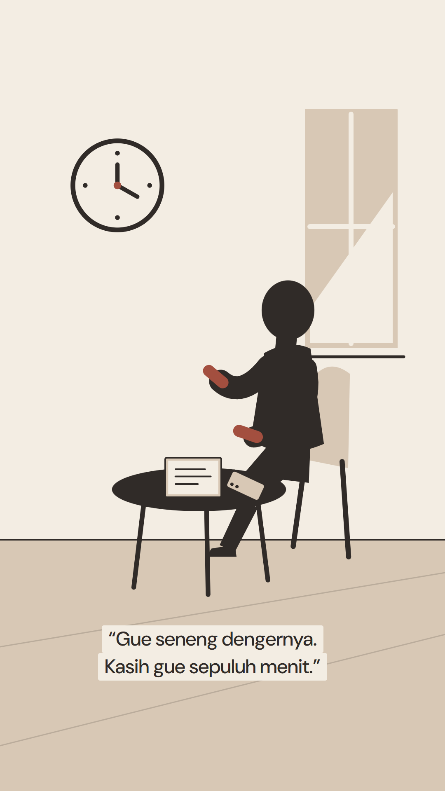
72–82 detik · 10 detik
Kalau lagi belum bisa fokus, bilang: “Gue seneng dengernya. Kasih gue sepuluh menit buat beresin ini. Habis itu gue pengen denger ceritanya.”
Memberi contoh mengakui kabar baik dan memperjelas kapan bisa mendengar.
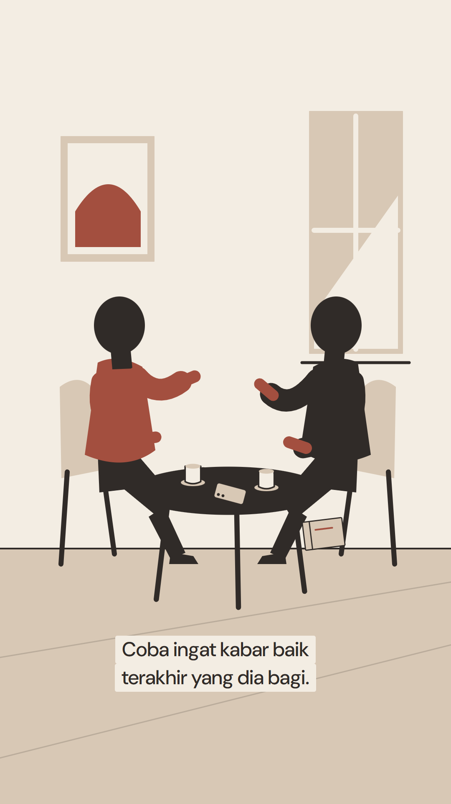
82–90 detik · 8 detik
Lalu beneran kembali. Coba ingat kabar baik terakhir yang dia bagi. Apa yang lo tanyain setelah mendengarnya?
Memperlihatkan tindak lanjut dan memberi ruang pada satu pertanyaan penutup.